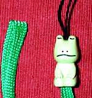
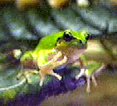

山梨にカエル岩！かえる博士が紅葉狩りで遭遇！【山梨発=石居かえる博士閣下】１１月５日に山梨県の甲武信ヶ岳の麓にある西沢渓谷に紅葉狩りに行きました。そのとき「かえる岩」というのがありました。あまり蛙らしくないんですけど、お送りします。蛙の頭骨にはよく似ています。写真の真中にある白っぽいのがそうです。上の写真は岩の位置を示す道標です。
【全国かえる奉賛会】おおー、自然石製のカエル岩といえば、最も著名なのが、志摩二見浦のものだが、山梨にもあったのかあ。蛙頭骨タイプに隣接する写真右側の岩も、でかいカエルが座っているようにみえます。このあたりの河原には、蛙岩がごろごろしているのでしょうか。いいなーっ
 謎の弟子ガエルストラップ入手！【日本発=かえる将軍同志記者】11月4日号で紹介していた、『光文社文庫を買って弟子ガエルをゲットしよう！キャンペーン』で、弟子ガエルをゲットしました。早速画像を送ります。私は応募の際、「かえるが欲しい」と一言書き添えました。それで当ったのかどうかはわかりません。なお、弟子ガエルについては、光文社ＨＰ内で紹介されています。
弟子ガエルはシッカリ者！【全国かえる奉賛会】文豪のそばに控える弟子ガエルは、作家志望のけなげなカエルであった。ガンバレー弟子ガエル。光文社ＨＰによると、弟子ガエルの師匠は、カッパ先生といい、『光文社文庫の看板作家（自称）。「へのカッパ文学賞新人賞」で文壇デビューを果たすも、あとに続く作品は特になし。しっかり者のカエルの弟子を持つ』ということだ。ということで、これからは、われわれカエラーが読書するときは、しっかり者の弟子ガエルがいる光文社の本を買いに行こう！
なお、光文社ＨＰ内俳句も募集していたので、大王はさっそく応募、『弟子ガエル、ほしさに光文社文庫買う』という句を投稿したあああ。
冬眠前に『イヨッ！』と挨拶カエル！ 【日本発=たか同志記者】自宅の庭のアマガエルは、今日もまだ日向ぼっこをしてました(^｡^)しかし、鳴き声がちょっと弱々しくなってきています(;.;)先日、部屋に一晩泊めたアマガエルの写真を貼付させて頂きます。ドラゴンアッシュのようなヒップホップ系のポーズが、なかなかオチャメだと思うのですが（笑）【全国かえる奉賛会】そうだねーっ！カエルたちもこれから冬眠に入るからねー。カエルは、冬眠するとき、夢をみるんだろうか？？また、来年になったら、ゲロゲロゲロゲロ、鳴きに出てきてくれえええー
７７７７７人目に記念品贈呈！【全国かえる奉賛会】もうじきカエルカウンタが７７７７７になります。ちょうどの訪問者には記念品をプレセントします。幸運なカエル訪問者は、大王様へのメールで自己申告してちょー！投稿採用者に武功カエル徽章を授与！ |
かえる古新聞過去に取り上げた記事を見出し付きで一覧したい人は、ここをクリック◆創刊号を見る◆先週号を見る◆話題の号を見る◆かえる新聞の昔を読む
|
私も入っています。。全国かえる奉賛会
大王様に会うには、このバナーをクリック。ずっと奥に写真館があるぞ。全国かえる奉賛会に入会するには、自分のホームページのどこかに、下の部分を追加するとバナーがリンク付きで表示されるぞ。どんどん入会しましょー |


|